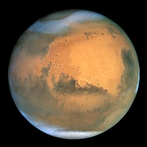

충현고에 다니는 주인공 오나리와 그 친구들 임유나, 임선지, 서미래의 이야기이다. 학교를 배경으로 일어나는 사건들과, 이 4인방의 과거 이야기를 회상하며 풀어가는 형식으로 진행된다. 갓 고등학교에 입학하는 오나리가 등굣길에 초등학교 친구였던 임유나와 마주치고, 학교에서 서미래와 임선지까지 함께 친해지는 것을 시작으로 이 네 명이 같이 다니게 된다. 이후 학교에서 나리에게 일어났던 작은 일들, 선지의 과거, 미래의 과거, 유나와 나리의 과거의 순서로 굵직한 스토리가 진행된다.
네이버 웹툰에서 2015년 5월 17일부터 매주 월요일에 연재된다. 1부의 내용은 전반부는 나리가 너무나 예쁜 친구들 때문에 자존감이 떨어지고 그 와중에 힘든 일을 겪지만 친구들과 어울리면서 극복하여 성장하는 스토리, 후반부는 친구들의 힘든 일을 함께 해결하면서 우애를 돈독하게 만드는 스토리이다. 2019년 9월 30일, 214화에서 작가의 말을 통해 1부(시즌 1) 후기가 올라온다는 글을 올려 1부가 완결되었음을 알렸고 6개월 정도 후에 시즌 2를 연재한다고 한다. 2020년 5월 4일 시즌 2를 2부로 연재를 재개했다. 작가의 말에 따르면 우정 위주로 흘러간 1부와 달리 2부는 이성 캐릭터와의 사랑 이야기도 다룰 예정이라고 한다. 오나리가 고등학교에 입학해서 엄친딸 소꿉친구 임유나와 재회한 것부터 양갈래 검은 머리의 미소녀 임선지, 금발 혼혈 미소녀 서미래와 만나게 되면서 펼치는 우정 만화. 지극히 평범한 고등학생 소녀 오나리가 주인공이기 때문에 오나리를 중심으로 이야기가 전개되고 있다. 대체적인 이야기 전개는 자잘한 에피소드들을 보여주며 옴니버스식으로 진행되는 듯 하다가 중요한 에피소드 하나를 꽂아넣는 식이다. 이 때 과거의 에피소드가 얽혀서 회상이 들어가는 일이 많아서 전개가 느린 편이다. 선지, 유나, 미래 이야기 모두 과거 이야기가 대부분. 학기 첫날로 이야기를 시작하고 현실에선 3년 가량이 지났지만 작중에선 여름방학 후이다. 그렇게 1부는 오랜 기간 동안 연재하면서 작중에서 1년간의 모습을 보여주었다. 2부에서도 어느 정도 비슷한 전개 방식을 보이고 있으나 1부와 달리 과거사가 나올 만한 캐릭터가 적다 보니 현재 시점에 더 주목하고 있으며 대부분의 에피소드들이 중요한 편이기에 옴니버스식 전개는 거의 나오지 않고 있다.
웹드라마로 나옴
이건 그냥 화성 사진... 연습용

2/9 html 공부 마무리. 2/10 부모자식과 목록 공부할 예정